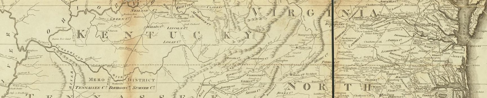

Richard L. Forstall's Population of States and Counties of the United States: 1790 to 1990 (U.S. Bureau of the Census, 1996) is an important research resource for anyone who works in economic history. Counties have changed over the course of history. New counties have emerged and some have been abolished. Forstall compiled every major change the Census Bureau recorded: counties formed, abolished, merged, split, or renamed. The trouble is that it is a book, and a tedious one, so researchers who use it usually code up the years they need and stop. I had an LLM read the whole thing and turn it into one machine-readable file, free to use under CC BY 4.0. As a check on accuracy, I compared it with the county changes that Martha Bailey and Andrew Goodman-Bacon coded by hand for their 2015 paper. For every one of their changes that comes from this book, this file reproduces their coding exactly.
Cite as: Joung, Andrew (2026). Historical county changes, 1790–1990, derived from Forstall (1996).
llms.txt describes this site and its files in plain Markdown. datapackage.json gives the column
types. This page carries a schema.org Dataset record. The data dictionary above is plain Markdown. Every county page follows the pattern
county/{state code}-{unit}-{name}.html, for example county/al-county-baldwin.html, and every state page
state/{state code}.html.
The book dates most events only to a census interval: a county formed between the 1800 and 1810 censuses shows 1800–1810, and a year appears only where the book prints one.
Bailey and Goodman-Bacon's county changes (2015, appendix Tables A4 and A5), row by row against this log.
Source: Richard L. Forstall (1996), Population of States and Counties of the United States: 1790 to 1990, U.S. Bureau of the Census (public domain). Always check a row against the scan it links to.